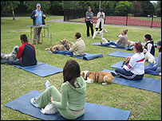
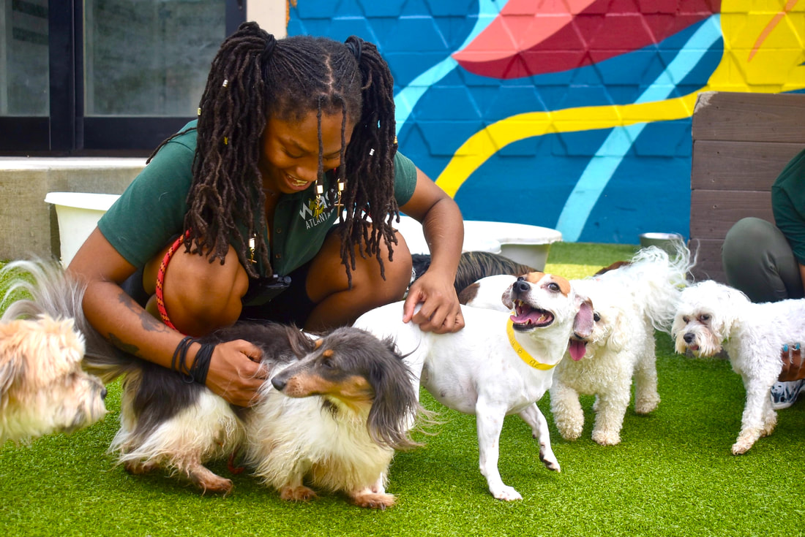

Discover the Joy of Adopting Rescue Dogs near You!

Are you ready to open your heart and home to a furry friend in need? Embrace the opportunity to transform a rescue dog's life while enriching your own with unconditional love and companionship. In Marietta, Georgia, there's a growing community dedicated to rescuing and rehoming dogs in need, and you can be a part of it. Each year, countless dogs find themselves in shelters, longing for a forever home where they can thrive. By choosing to adopt from a rescue organization near Marietta, you're not just bringing home a pet – you're offering a second chance at life to a deserving dog. Whether you're looking for a playful pup to join your active lifestyle or a loyal companion to curl up with on the couch, there's a rescue dog waiting to steal your heart. From adorable puppies to seasoned seniors, rescue organizations in Marietta cater to a variety of preferences and lifestyles. Before you embark on your adoption journey, take the time to research local rescues, shelters, and adoption events. By connecting with reputable organizations and knowledgeable staff, you can ensure a smooth transition for both you and your new four-legged family member. When you adopt a rescue dog, you're not just gaining a pet – you're gaining a loyal companion, a devoted friend, and a source of endless joy. Witness the transformative power of adoption firsthand and experience the unconditional love that only a rescue dog can provide. Open your heart to a new best friend and discover the incredible bond that awaits you in Marietta, GA.
LATEST NEWS
An On-Going Fight
Every dog deserves a loving home, free from fear and cruelty. Unfortunately, some dogs find themselves caught in the cruel world of dog fighting, where they suffer unimaginable abuse and neglect. But thanks to the tireless efforts of animal rescue organizations, these dogs are given a second chance at life.
MORE+
Piedmont Park's Annual Puppy Yoga
Uniting Community and Canine Compassion. As participants unfurl their yoga mats and settle into their poses, they're joined by an enthusiastic pack of furry friends, each eagerly awaiting their chance to stretch, play, and cuddle. For those with disabilities, the presence of these loving companions offers not only physical support but also emotional comfort and companionship.
MORE+
the bark :Your Trusted Source for All Things Dog in Atlanta, GA
Welcome to The Bark, your go-to online destination for everything dog-related in Atlanta, GA, and beyond. At The Bark, we're passionate about all things canine, from the latest news and trends to essential information on individual dog care, laws, medical facts, free resources, and much more. Our mission is simple: to provide dog owners and enthusiasts with a comprehensive and trustworthy source of information to help them navigate the wonderful world of dog ownership. Whether you're a seasoned pet parent or considering welcoming a furry friend into your life for the first time, The Bark is here to support and guide you every step of the way. From breaking news and insightful articles to practical tips and expert advice, we cover a wide range of topics to keep you informed and inspired. Whether you're looking for guidance on training techniques, updates on local dog-related legislation, or tips for maintaining your dog's health and happiness, you'll find it all right here at The Bark. But The Bark is more than just a news source – it's a community. We believe in the power of dogs to bring people together, and we're committed to fostering a welcoming and inclusive space where dog lovers from all walks of life can come together to share their stories, ask questions, and connect with like-minded individuals. So whether you're searching for the perfect dog-friendly park in Atlanta, seeking advice on choosing the right food for your furry companion, or simply looking for a daily dose of canine cuteness, look no further than The Bark. We're here to inform, educate, and entertain – because when it comes to dogs, there's always something new to learn and love.
Are you ready to open your heart and home to a furry friend in need? Embrace the opportunity to transform a rescue dog's life while enriching your own with unconditional love and companionship. In Marietta, Georgia, there's a growing community dedicated to rescuing and rehoming dogs in need, and you can be a part of it. Each year, countless dogs find themselves in shelters, longing for a forever home where they can thrive. By choosing to adopt from a rescue organization near Marietta, you're not just bringing home a pet – you're offering a second chance at life to a deserving dog. Whether you're looking for a playful pup to join your active lifestyle or a loyal companion to curl up with on the couch, there's a rescue dog waiting to steal your heart. From adorable puppies to seasoned seniors, rescue organizations in Marietta cater to a variety of preferences and lifestyles. Before you embark on your adoption journey, take the time to research local rescues, shelters, and adoption events. By connecting with reputable organizations and knowledgeable staff, you can ensure a smooth transition for both you and your new four-legged family member. When you adopt a rescue dog, you're not just gaining a pet – you're gaining a loyal companion, a devoted friend, and a source of endless joy. Witness the transformative power of adoption firsthand and experience the unconditional love that only a rescue dog can provide. Open your heart to a new best friend and discover the incredible bond that awaits you in Marietta, GA.